When I first joined Smile, I opted in to take Support shifts, 2 hours a week. After replying to hundreds of emails and chats, I saw an opportunity to improve the way merchants configure their reward programs. I created a proof-of-concept design to improve the experience which made it to the product roadmap in Q1 2020.
Feb 2020 - Apr 2020
Points, Referrals, and VIP, make up the foundation of a reward program. Configuring a reward program is a critical step that a merchant has to complete before launch. Being able to work efficiently within it is something we actively think about and optimize for.
We learned that there were to primary reasons for why they struggle with configuring their reward programs. The first was that there was an insufficient amount of information that help them make informated decisions, and the second was that they couldn't find or return back to where many reward configuration settings belonged. This resulted in increased support tickets and frustration from merchants.
We decided to restructure our program area to make it easier for merchants to not only configure their programs but to understand why they were making various decisions. Our goal was to help our merchants feel in control of their program as they reward their customers.
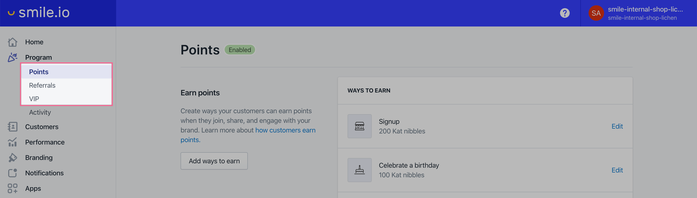The first significant decision we made was to flatten the information hierarchy. This would bring forward program functionalities that would have been hidden behind icons. By exposing these functionalities, the information architecture would be more intuitive for merchants and improve discoverability.
Here is the old vs. the new Program information architecture:
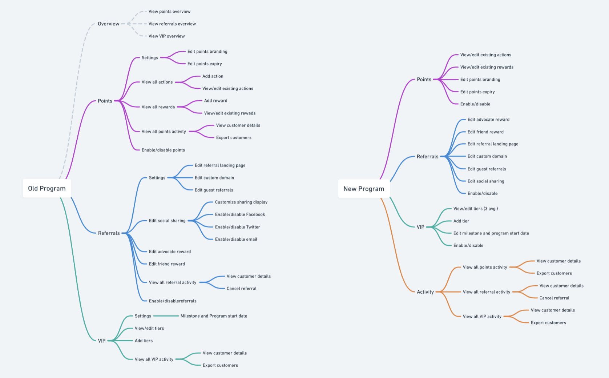To give you an idea of how we did this for each program (Points, Referrals, and VIP), here are the before and after shots of the Points program page.
Before (the information is divided between 3 pages):
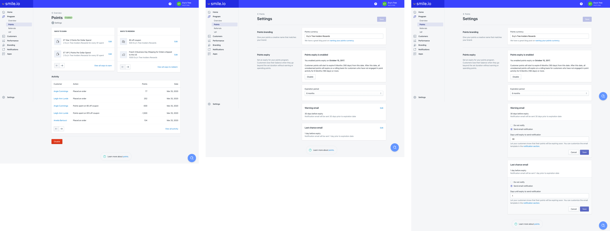After (the information is combined into a single-page, settings layout):
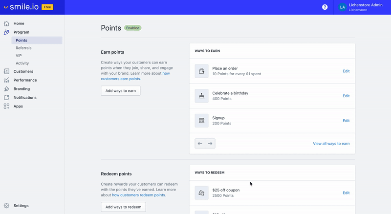All in all, the interface of the programs felt too reductive in its representation of their configuration. Some functionalities are inherently more difficult to explain to merchants than others. The program settings lacked pertinent information that we assumed merchants would know. This led to our support team to answer several of the same questions. Here are the before and after shots of the VIP program page.
Old VIP settings: VIP is one of the most complex to set up. In fact, this section took the longest for our customer success representatives to explain to merchants because there was so much confusion around how it worked.
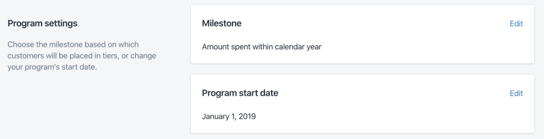New VIP settings: here, I opted to use natural language to describe the settings merchants chose so that they're more contextual and easier to understand at a glance.
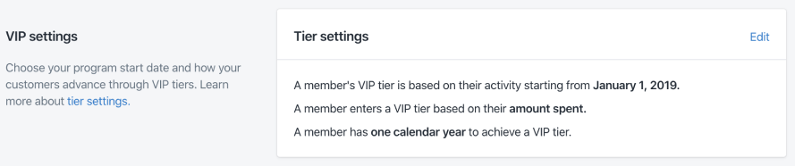 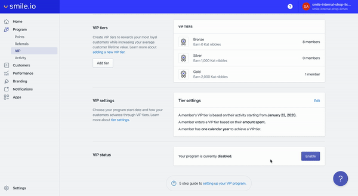It was important to get the language here as informative yet concise as possible. Several iterations with the customer success and support team took place before we arrived at the final copy. By offering the additional guidance, we can help merchants feel more confident about taking the next big step: launching their program.
Points expiry is an effective way to help merchant to re-engage customers. Despite the benefits of the feature, few merchants knew about or used the feature because it was difficult to find and it's benefit wasn't made immediately clear.
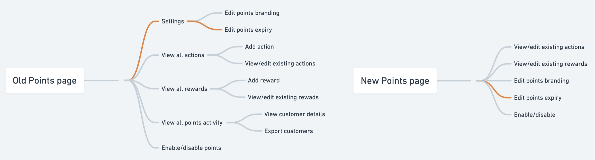By progressively disclosing information as merchants needed them, I was able to condense several functionalities while adding in more description to show how they worked and what their benefits were.
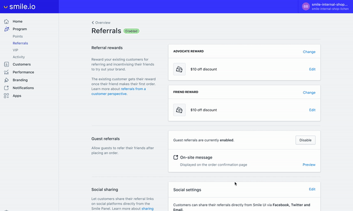Some settings may look intimidating for new merchants simply because they don't know where to start. Program configuration also relies heavily on merchant creativity. To remedy this, I added sample content in empty states to reduce user paralysis and to provide a bit of inspiration. It also helps merchants visualize how their creations will look like to their customers.
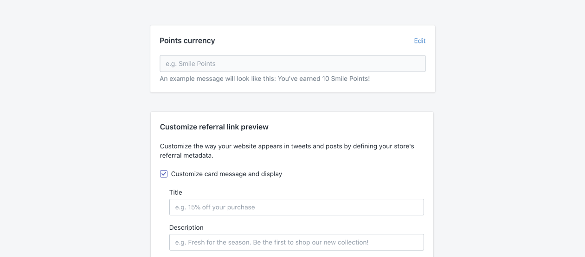Merchants frequently ask for features that already exist. By showing merchants all the features we have to offer at the right places, we can help them discover features that they would find valuable or that they might consider in the future as their businesses grow. One example is our VIP program which is only available in a paid plan. However, most merchants didn't know about it because it didn't appear until they upgraded. By showing VIP in a splash page, we expect to see an increase in interest towards the program and greater plan upgrades.
New program splash pages:
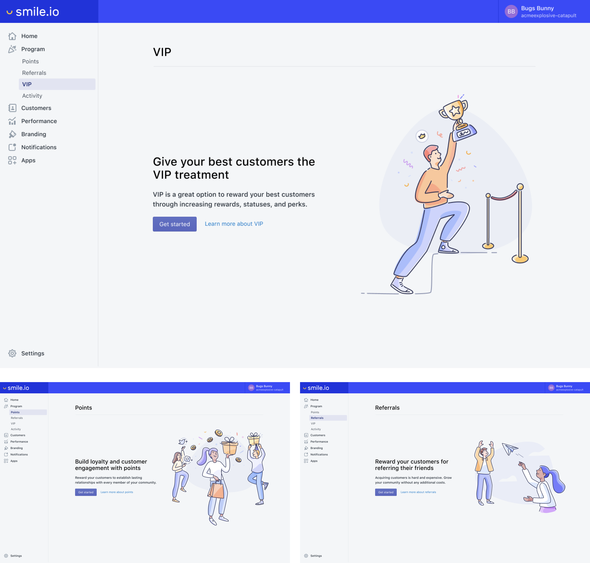Here, we introduce to merchants the features that are available in higher paid plans.
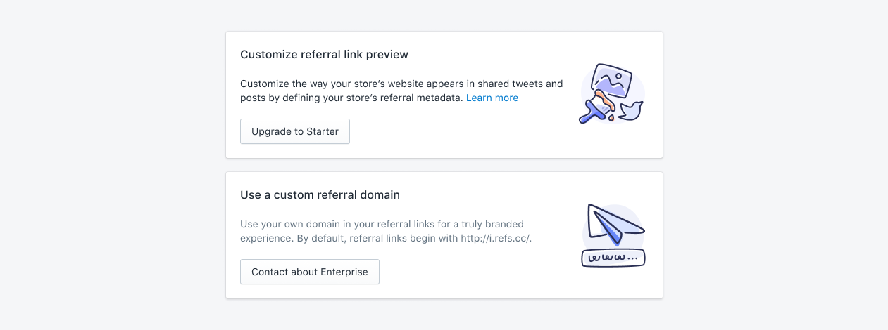After nailing down the program configuration pages and validating the direction with early user research, I polished up the interaction details and interface. Here are the final result ✨:
Points:
Referrals:
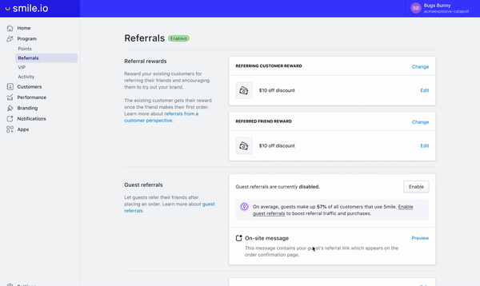VIP:
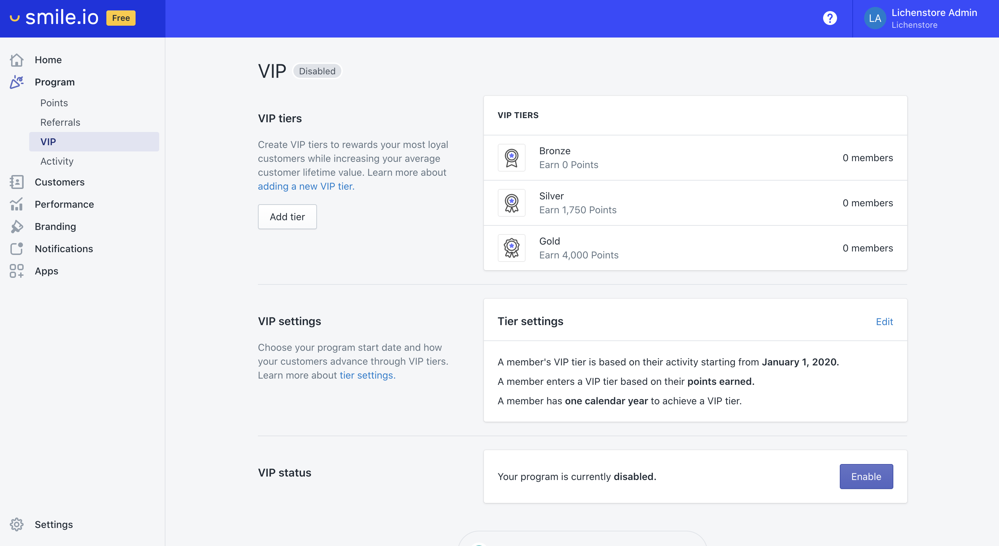Following the release, I carefully monitored conversations for feedback from merchants and created Mixpanel events to understand changes in performance. Before we started on the project, I create Mixpanel events to establish a baseline for current feature usage. In some cases, I used component interactions as a proxy for measuring feature usage. Here are some examples of the Mixpanel events used in Referrals.
For this project, I’m particularly proud of how simple changes in the design and clearer feature explanations lead to an increase in feature usage and discovery, increase in conversions, and a reduction in support tickets.
Just a few days after the new Points and Referrals page were launched, we saw an immediate increase in the number of merchants using the features points expiry and guest referrals. The number of merchants per day who enabled the guest referrals feature tripled.
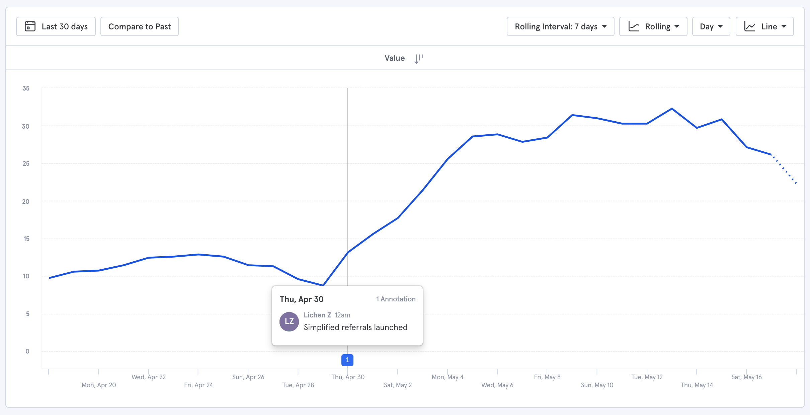And the number of merchants per day who enabled the points expiry feature doubled. These results are significant because they allow merchants to get more value out of Smile through greater customer engagement. The two features are also two of the primary reasons why merchants upgrade to paid plans.
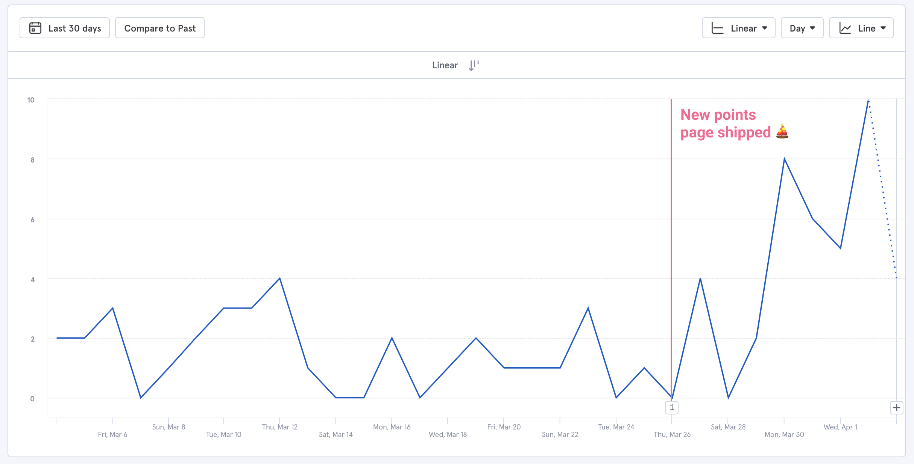Merchants also started to engage with smaller branding functionalities like customizing the name of their points currency and adding branded images. Here, the number of merchants changing currency name nearly tripled.
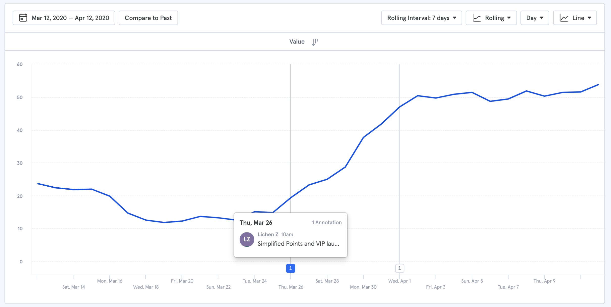For this project, the one learning that stood out the most was the importance of good copy. Explaining complex features in a way that didn't leave room for misinterpretation or confusion reduced the number of support questions for the programs area significantly. Crafting the copy took much longer than I had originally anticipated but it proved to be worthwhile.
{kind=link}
{kind=link}
{kind=link}
{kind=link}
{kind=link}
{kind=link}
{kind=link}
{kind=link}
{kind=link}
{kind=link}
{kind=link}
{kind=link}
{kind=link}
{kind=link}
{kind=link}
{kind=link}
{kind=link}
{kind=link}